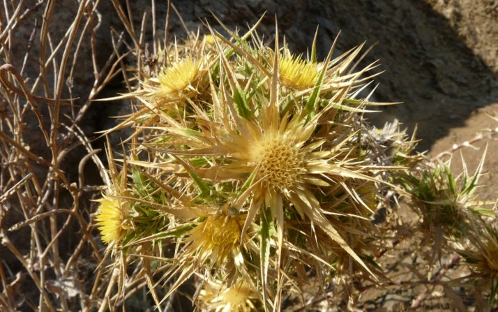
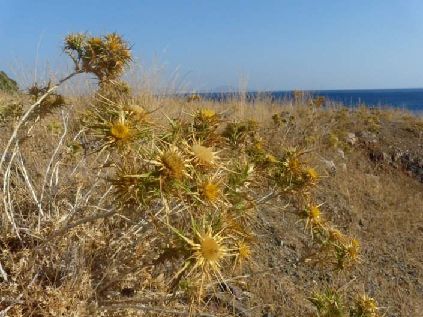
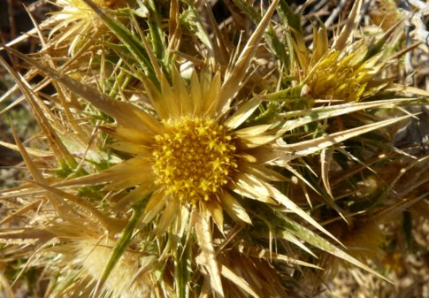
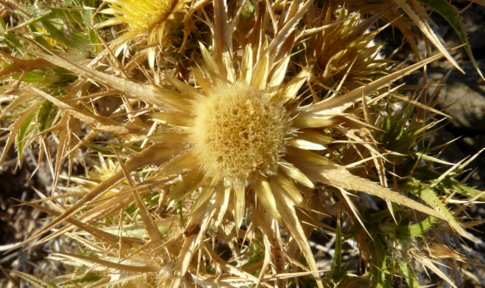
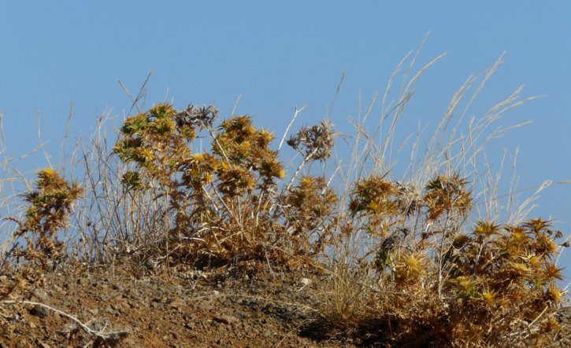

Carlina graeca Melambes (Agios Giorgos) 04 septembre 2011
Carlina graeca Melambes (Agios Giorgos) 04 septembre 2011
Carlina graeca Melambes (Agios Giorgos) 04 septembre 2011
Carlina graeca Melambes (Agios Giorgos) 04 septembre 2011
| PHRYGANA | Fauna | Flora | Galles | liste des espèces |
contact -
info - commentaires phrygana1 (at) gmail.com |
| Particularités crétoises | nouveautés | Mines | ressources naturelles |
| Carlina graeca HELDR. & SARTORI |
| 257 | Flora | ASTERACEAE | Cardueae | Carlina L. |
 Carlina graeca Melambes (Agios Giorgos) 04 septembre 2011 |
| syn.: Carlina corymbosa subsp. graeca (HELDR. & SARTORI) NYMAN | |
| Feuilles: feuilles supérieures caulinaires glabres, allongées-lancéolées, 5 fois aussi longues que larges, presque fanées à la floraison; lobes 4 - 6, épineux (2-3 épines), l'épine terminale mince longue de 15 - 20 mm | |
| Tige blanchâtre | |
| Fleurs: plusieurs capitules (diamètre 15 mm); fleurs jaunes; bractées épineuses, allongées-lancéolées (épines latérales longues de 7 - 16 mm, épine terminale plus longue (15 - 25 mm) | |
| Hauteur: 25 - 80 cm | Type biologique: hémicryptophyte ramifié |
| Floraison: juillet août septembre octobre | |
| Altitudes: 1 – 1300 m | |
| Statut en Crète: indigène | |
| Biotopes en Crète: phryganas, bords des routes, fourrés, champs abandonnés. | |
| Distribution: Grèce, Crète, Turquie | |
|
Carlina graeca Melambes (Agios Giorgos) 04 septembre 2011 |
|
 Carlina graeca Melambes (Agios Giorgos) 04 septembre 2011 |
|

 Carlina graeca Melambes (Agios Giorgos) 04 septembre 2011 |
|  Carlina graeca Melambes (Agios Giorgos) 04 septembre 2011 |
| 30 septembre 2012 |
| © paul fontaine -- © Phrygana.eu 2007 -- 2013 |